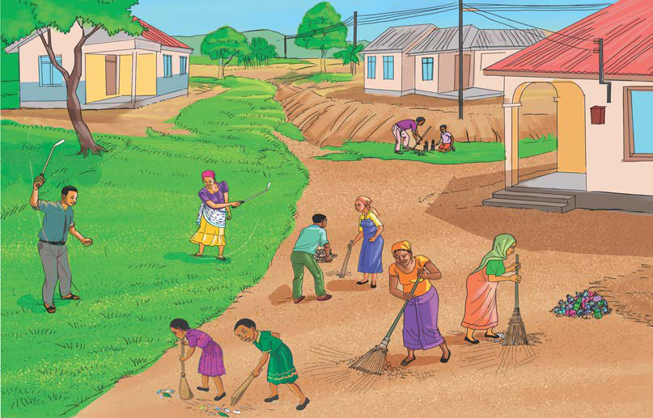

Kielelezo namba 4: Watoto wakishiriki kusafisha mazingira
Kutii sheria na kanuni za nchi na za jamii
Utii wa sheria na kanuni huwezesha watu kuishi kulingana na maadili ya jamii na Taifa husika. Mtoto ana wajibu wa kutii sheria na kanuni zilizopo katika jamii na Taifa lake. Mtoto asipotii sheria za nchi, huweza kujikuta katika matatizo na vyombo vinavyosimamia sheria hizo. Aidha, utii wa sheria na kanuni za nchi ni muhimu kwa usalama wa mtoto mwenyewe.
Soma matini kuhusu sheria za nchi, kisha andika wajibu wa mtoto katika kuzitii sheria hizo.
Kutunza, kuheshimu na kulinda mali za umma na za jamii
Ibara ya 27 (1) na 27(2) ya Katiba ya Jamhuri ya Muungano wa Tanzania ya Mwaka 1977, inaeleza wajibu wa kulinda mali asilia za Taifa, mali za mamlaka ya nchi na mali zinazomilikiwa kwa